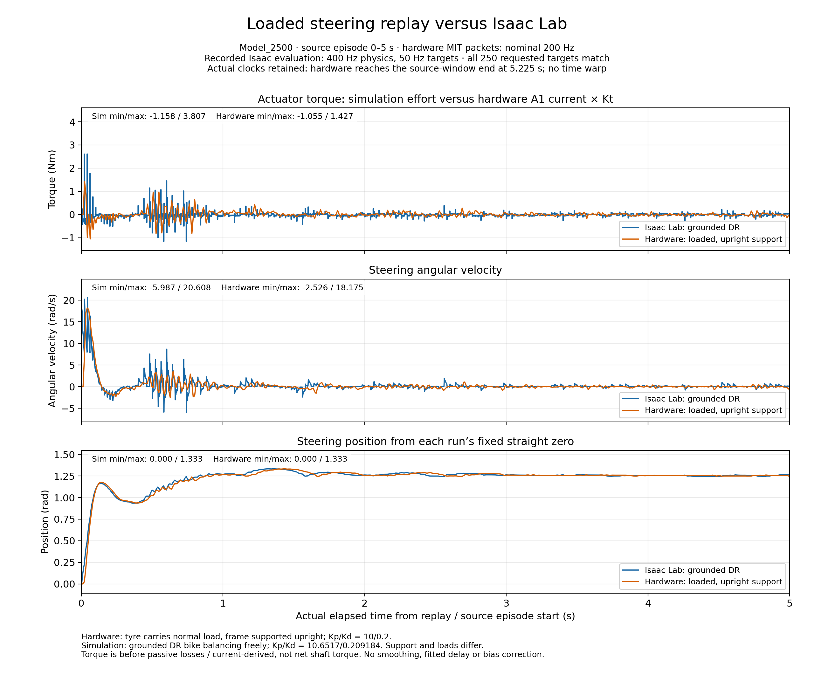
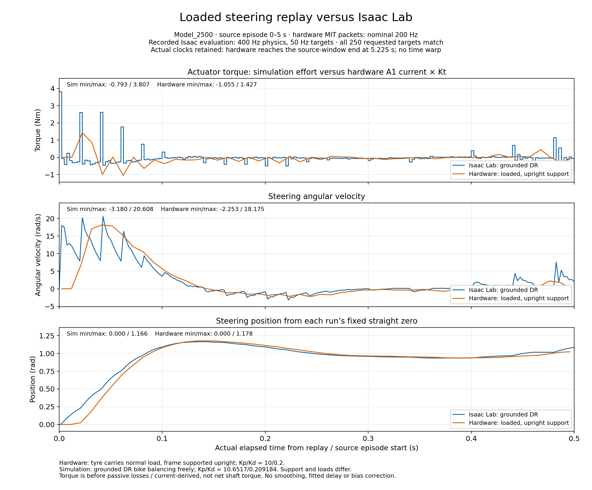
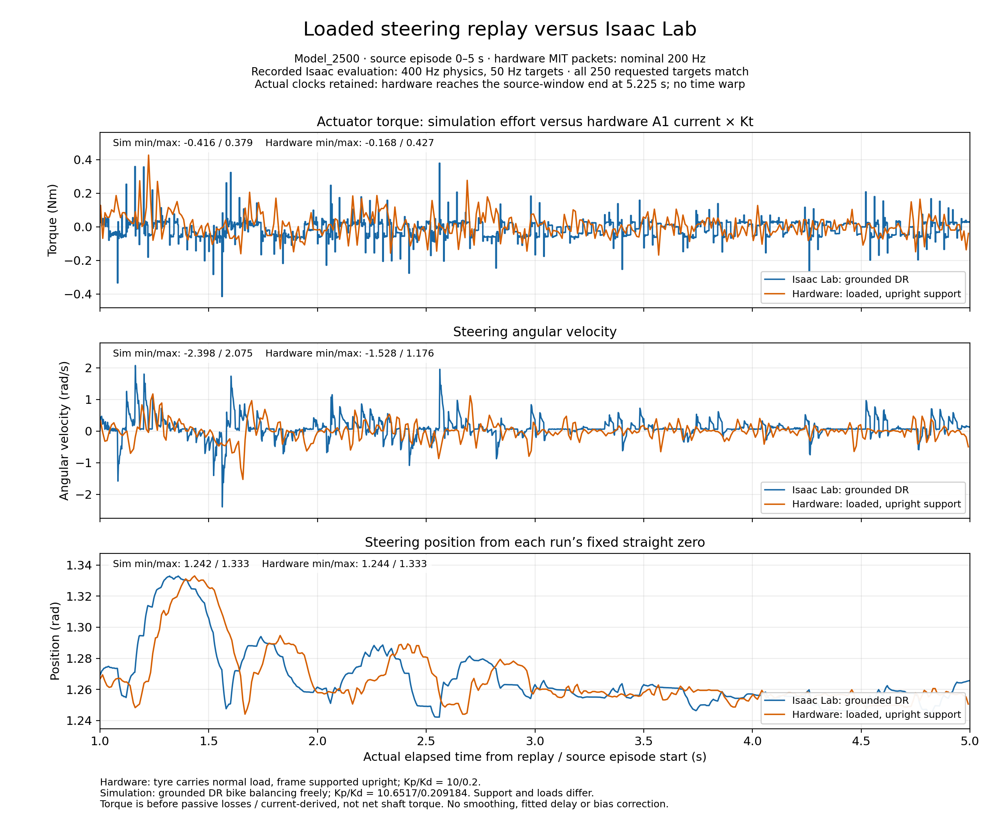

Three panels: torque, velocity and position. Blue: original grounded Isaac Lab 400 Hz DR evaluation, environment 0, episode 1. Orange: front tyre normally loaded, frame supported upright, steering free; nominal MIT packet rate 200 Hz.
All 250 source targets match exactly (episode 0–5 s). Native clocks are retained: hardware finishes the source window at 5.225 s. No smoothing or timing/bias correction.
Support, DR, gains and sampling differ. These are response traces, not a controlled comparison of identical plants. Hardware torque is A1 current × Kt; narrow peaks can be missed.



Methods and limitations · Plotted samples · Statistics and provenance · Verification